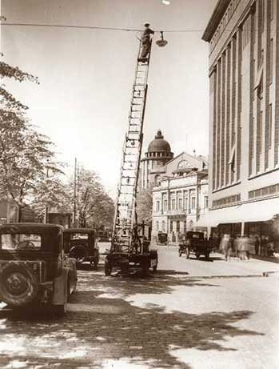

Sähkö, avainvuodet

Sähkön voittokulku Suomessa alkoi Finlaysonin tehtailta Tampereelta vuonna 1882. Sähköistyksen alkuvaiheet kytkeytyvät alueen teollisuuslaitoksiin. Lähinnä höyryvoimalla toimineet laitokset saattoivat kytkeä koneidensa pyöritettäväksi "dynamon", jonka tuottamalla virralla valaistiin tehtaan ja lähipiirin rakennuksia.
Helsinkiin perustettiin vuonna 1884 ensimmäinen yksityinen useille kuluttajille sähköä jakava sähkölaitos Helsingin Sähkökeskusvalaistus, jonka dynamokone syötti 100 voltin tasavirtaa neljään taloon Esplanadin varrella.
Suomen ensimmäinen kunnallinen sähkölaitos aloitti toimintansa 15.11.1888 Tampereella.
Sähkölaitoksia perustettiin maassamme ahkerasti 1900-luvun alussa koskien varsille.
Vuosina 1917–1925 maaseutusähkölaitosten määrä kasvoi 130:sta 450:een.
Pulakauden aikana 1930-luvulla paloöljypula aiheutti sähköistysvimman. 1930-luvun lopulla oli sähköistetty jo puolet Suomen maaseututalouksista ja käytännöllisesti katsoen kaikki kaupunkikodit.
1930: kaupunkeihin sähköliesiä ja maalaistaloihin erilaisia sähkömoottoreita.
1960-luvulla Suomessa oli vielä sen verran ilman sähköä olevia talouksia, etenkin maaseudulla, että vuonna 1965 Valtioneuvosto asetti komitean selvittämään Suomen harvaanasuttujen alueiden sähköistämistä.
1977 Loviisa 1 kytkettiin verkkoon.
1978 Olkiluoto 1 kytkettiin verkkoon.
1980 Olkiluoto 2 kytkettiin verkkoon.
1980 Loviisa 2 kytkettiin verkkoon.
Olkiluoto 3 rakentaminen aloitettiin 12.8.2005.